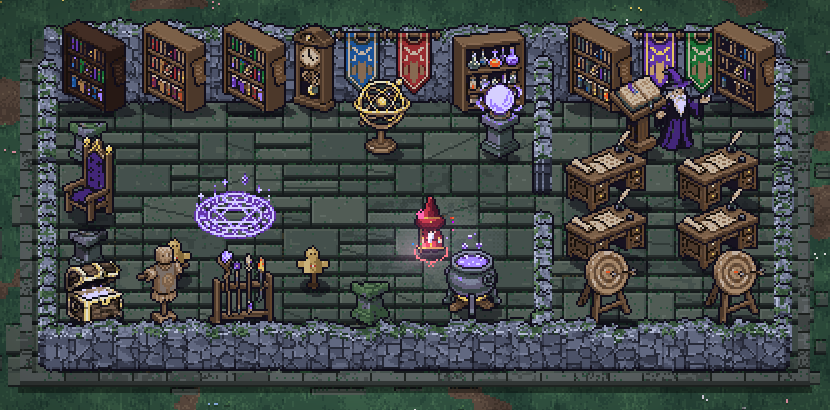
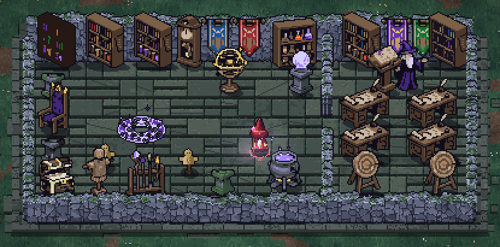
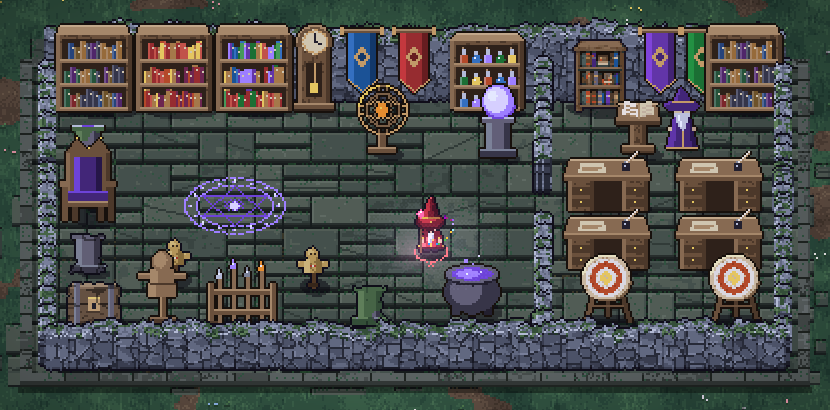
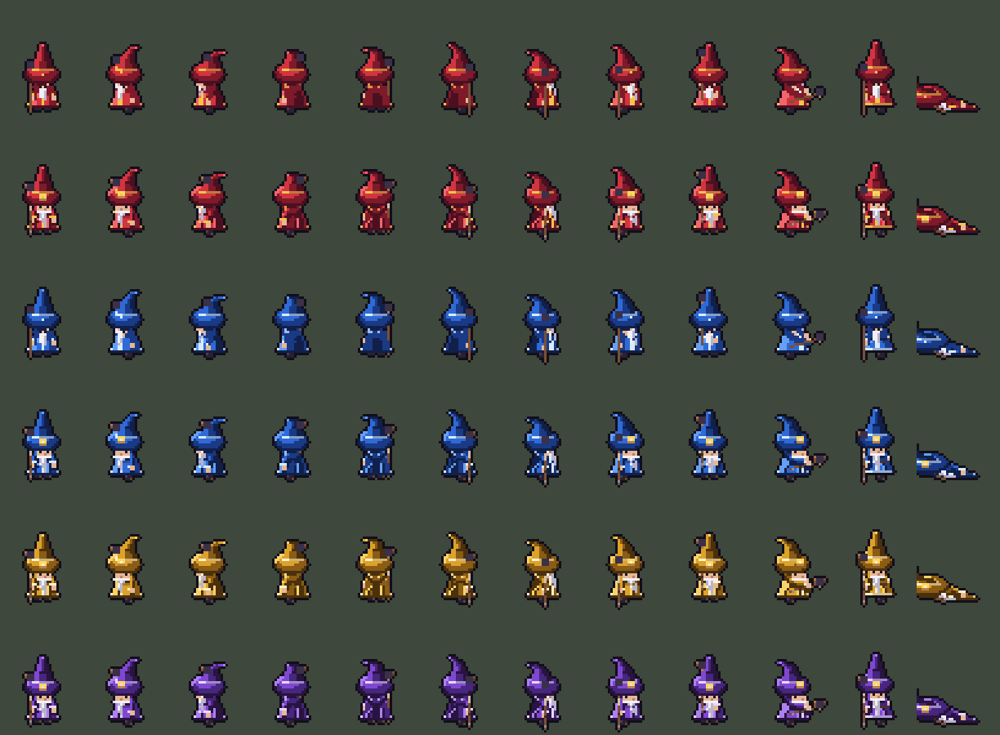
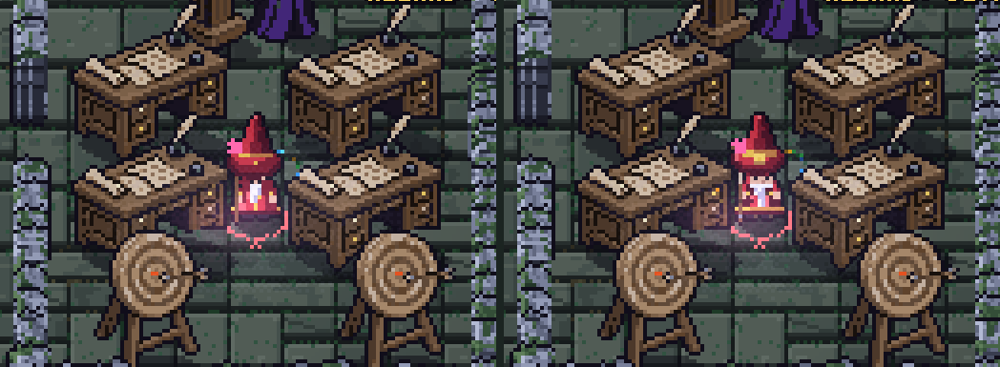
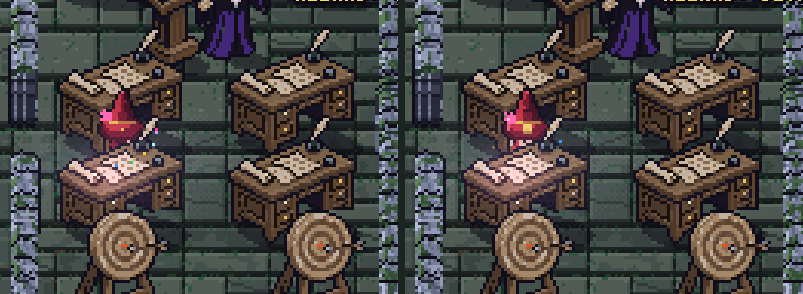
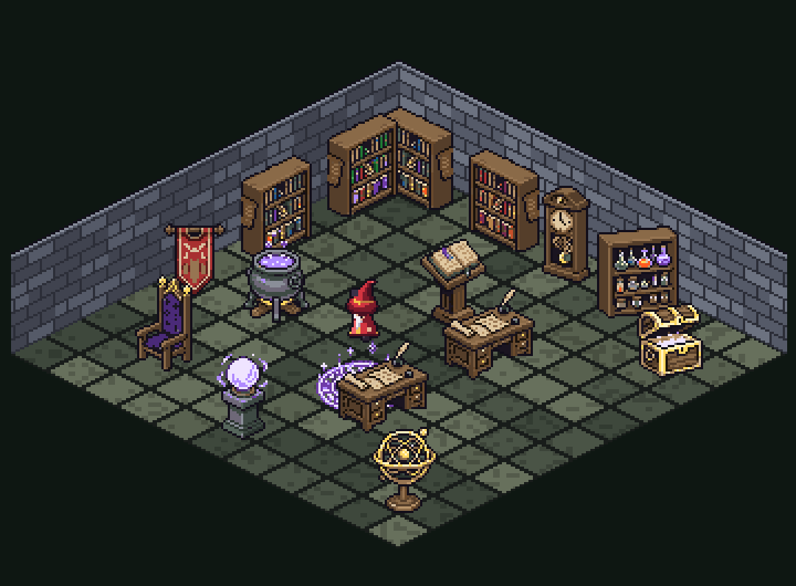
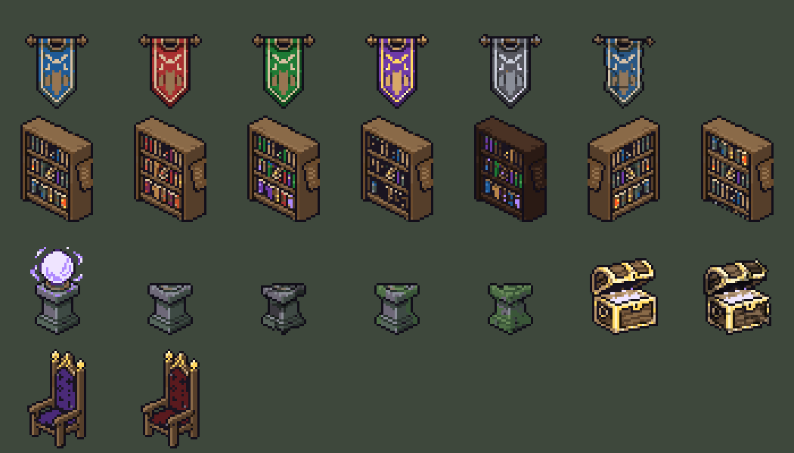
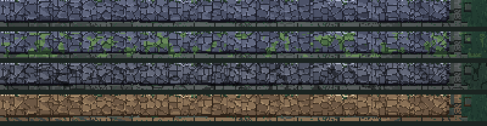

Round 2: the mock room
One mock room, in the running game, furnished three ways. Everything here came from images already paid for, or from code. It cost no new generations. In the game: press Esc and pick Academy (art test), or press 5, or add #academy to the address. O swaps the props and I swaps the wizard; the label at the top right says which you’re seeing.
Each room shot is the game at 2×. Your answers save as you go. If you leave one empty, my pick stands.
Lean: PixelLab’s props as they came
angled, full detail

The richest of the three, and the room has real character. The catch shows along the back wall: the shelves are turned about 30° but the wall runs straight across, so they look parked at an angle to it. Free-standing things (desks, lectern, cauldron, chest) don’t have that problem. The teacher is also about 40% taller than a player’s wizard, because the sheet’s props are drawn at their own scale.
Simple: the same props, reduced locally
angled, nine colours at most, single pixels removed

The reduction worked: the shapes hold, the spines and potions keep their colour, and it’s free. But at game size the difference from Lean is small, and what goes is mostly the charm (sparkles, wood grain). It stops props outshining a wizard less than I expected, because their size and contrast do that, not their pixel count.
Code: straight-on, drawn in the game’s pixel library
straight-on, sixteen props, one shelf from PixelLab Pro

The tidiest fit with the floor and walls: everything sits square to the room. It’s also the plainest, and it reads more like a board game’s tokens. The shelf at the classroom’s left is PixelLab Pro’s straight-on one, and it sits happily among code-drawn neighbours, which suggests the two mix.
The wizard

Rows 1 and 3 are today’s wizard; rows 2 and 4 the detailed one, then yellow and violet detailed. Eight facings, then gathering, casting, walking and knocked down.

Close up at 4×, today’s on the left. The detailed wizard adds robe folds, a belt, sleeves with cuffs, a hat buckle and creases, a claw on the staff, and a face. The camera looks down past the hat brim, so the head was never visible: the face is painted as a strip just under the brim, and that’s the biggest gain. From behind, the folds work well. From the front it’s a modest step, because at this size the beard and hands cover the belt and folds.

The depth sort: the wizard stands in front of the far desk and behind the near one, in both drawings.
True isometric, for comparison

This is only a picture: nothing in the game draws this way. I think you were right. The same props look far better here than in the mock room, because they finally stand square to the walls. Two different things get called “isometric”, though:
- Angled props on today’s floor is what Lean is. It costs nothing, and the mismatch along the walls stays.
- A true isometric camera rotates the whole world 45°. The sim doesn’t change, and neither do the depth sort, round spell areas (a circle stays the same ellipse), the mouse (one function) or the wizards’ facings (one angle offset).
- What it does cost: about 210 lines of drawing code assume the ground squashes straight down the screen, and about 135 more place things one axis at a time. Those lines are mostly spell effects, walls and telegraphs. Walls need a new painter, because two faces show rather than one. The floor needs repainting as diamonds. Pad sticks need turning 45°. A rectangular room becomes a diamond on a wide screen, so far less of it fits. I’d guess a few focused sessions, and the risk is in the spell effects, not the camera.
- The cost grows: every room, wall style and effect built on today’s camera adds to it.
Variations, for free

The left of each row is the original. Banners: red, green, violet with gold, ash with silver, frayed. Shelves: red books, bright books, half empty, dark oak, mirrored, shelves swapped. Then the crystal ball, a plinth cut from it, worn, mossy, overgrown; a chest and an old chest. Last row: a throne and a red one.

The same tools on the game’s own wall, top to bottom: today, more moss, aged, sandstone. These four are pictures for now. In the game the walls are painted live, so these would become settings of that painter.
Other savings I found: PixelLab’s 16-object sheet cost 10 generations against 5 for each Pro prop, so a sheet plus local variants gives by far the most per generation. The room shows 30 placed props from 16 generated images. Each variant is about a kilobyte or two, can be remade by script and shares its base’s footprint, so it adds no map or collision work. Keeping every raw result also means a tool can be improved and rerun without paying again.